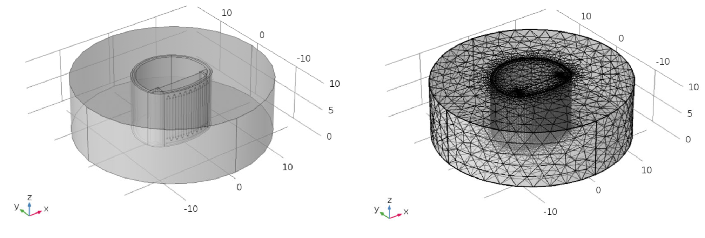

Zechen Xiong | ZeRobot
Postdoctoral Researcher, Soft Robotics & Bistable Mechanisms
Texas State University, San Marcos, TX, 78666
Ph.D., Columbia University, Class of 2024

Postdoctoral Researcher, Soft Robotics & Bistable Mechanisms
Texas State University, San Marcos, TX, 78666
Ph.D., Columbia University, Class of 2024
CarbonFish is now undulating up to 10Hz!
Servo-driven bi-stable hair-clip mechanism inspired fish robot, as fast as its attributive phrase is long!
Snapping undulation enable the fish robot to gain three times more thrust than sinusoidal swimming pattern.
Courtesy of Zihan Guo

This fish robot exhibits a bistable swimming gait that remains largely unexplored.
This gripper is manipulating limp objects.
This bionic bistable crawler gallops like a vertebrate.
To create CFRP lattices with high specific strength.

To simulate and analyze the mechanical properties of structural battery.

Courtesy of Tianwei Jin at. el.
My first English publication. A masterpiece of gibberish...
It is my Master degree thesis. Emm.. still recalling what it is about...
327 W Woods St, San Marcos, TX 78666
November 2025 © Zechen Xiong